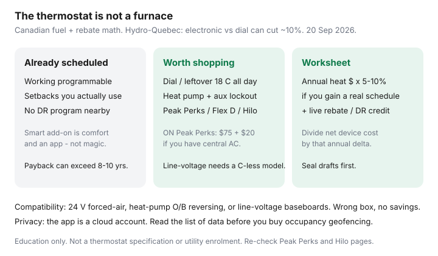

Utilities · Canada
Are smart thermostats worth it in Canada? Savings math beyond the marketing
Canadians buy a $250 thermostat because the box promises 23% and then leave the house at 21°C all winter with the attic hatch open. A smart thermostat is a schedule you will actually keep, plus a few features that matter in this climate. It is not a furnace and not a rebate for a leaky house.
This is fuel-type math: what changes versus a well-set programmable, which systems the device can even talk to, and how Peak Perks or Québec peak offers stack. Seal first with air sealing. If you only want the Ontario credit, the deeper program page is Peak Perks.
Disclosure: Smart thermostats are an offer type (Peak Perks lists ecobee, Nest, Sensi, Honeywell Home, and others). Saving Optimizer may earn a commission if we later add partner links. We do not currently claim thermostat-brand, IESO, or Hydro-Québec partnerships. Credits and eligible models change — re-check the live program page before you buy.
Key takeaways
- A well-set programmable already captures most schedule savings. Smart is worth more if you will use remote setbacks, heat-pump lockouts, or a demand-response program.
- Hydro-Québec: swapping dial stats for electronic ones can cut about 10% of annual heating cost. “Up to 20%” winter stories are Hilo + Flex D + behaviour, not the plastic alone.
- Compatibility is the first filter: 24 V forced-air, heat-pump O/B reversing valve, or line-voltage baseboards. Buy the wrong class and you buy a paperweight.
- Ontario Peak Perks (20 Sep 2026): $75 enrolment + $20/year, central AC, eligible Wi-Fi stat — not both with Hydro One myEnergy Rewards.
- Run a break-even on your heating dollars. Do not use a U.S. 23% brochure.
What smart schedules change vs a well-set programmable
Both devices can drop the setpoint when you sleep or work. The programmable already does that if someone set it in 2019 and nobody hit Hold. Smart extras that sometimes pay in Canada:
- Geofencing or a phone app when you travel or stay late — the house is not 21°C for an empty Tuesday.
- Learning that you will not program a 7-day clock. Learning that fights a heat-pump lockout can cost money; look for manual lockout controls.
- Utility event automation (Peak Perks, Hilo, some Alberta or B.C. pilots).
If you already keep 18°C nights and 20°C days on a $40 programmable, the upgrade is comfort and an app. Price it that way.

Compatibility: forced-air, heat pumps, line-voltage baseboards
| System | Typical wiring | What to look for |
|---|---|---|
| Gas / electric furnace + central AC | 24 V, often a C-wire | Common 24 V smart stats; add a C-wire or compatible adapter if needed |
| Heat pump (ducted) | 24 V plus O/B reversing | Heat-pump mode, aux lockout, compressor lockout — not “conventional only” |
| Hybrid dual-fuel | Heat pump + furnace | A control that can set the changeover. A conservative installer lockout can erase the pump |
| Electric baseboards | Line voltage (120/240 V) | Line-voltage smart stats; one per zone. See the baseboard guide |
| Boiler / radiant | Varies; sometimes dry contact | Ask the hydronic tech. Many consumer stats are the wrong device |
Cold-climate features that matter
The brochure feature is “works with Alexa.” The January feature is:
- Auxiliary lockout on a heat pump so electric strips stay off above a temperature you choose.
- Compressor lockout on a hybrid so the furnace takes −20°C if that is the honest COP crossover — and so you can change that number.
- Recovery that does not blast strips for two hours because you set 16°C all day and 22°C at 5 p.m. on ULO (Ontario’s 39.1 ¢ dinner hour is a trap; see plan choice).
- Humidity and frost displays are nice. They do not replace a clean filter or a sealed hatch.
Stacking utility rebates and Peak Perks-style enrolments
Ontario Peak Perks, verified 20 Sep 2026 on the Save on Energy page: $75 virtual prepaid Mastercard on enrolment (within 60 days of acceptance) and $20 each year you stay. You need central AC (or a heat pump that is part of that AC), an eligible Wi-Fi thermostat, and no overlapping DR program. Hydro One customers pick Peak Perks or myEnergy Rewards — not both. Cornwall is out. Events are a few summer weekday hours; you can override.
Save on Energy has also advertised a separate Home Renovation Savings thermostat path and an Energy Affordability Program free-stat path. Those are different applications. Québec’s Hilo offer (smart stats at $0 in some campaigns, Flex D automation, “up to 20%” winter bill when combined with peak participation) is a Hydro-Québec product — re-read the live offer. A $75 card does not, by itself, justify a $250 device if you have no AC and a working programmable.
Privacy and connectivity trade-offs at a practical level
A smart thermostat is a cloud account. The manufacturer can see setpoints, occupancy guesses, and sometimes a floor plan you uploaded. Practical rules:
- Use a unique password and turn on two-factor authentication.
- You do not have to enable geofencing or microphone features.
- If the Wi-Fi dies, you still need local buttons. If the model cannot run a schedule offline, that is a January risk.
- Demand-response programs will adjust the setpoint. Override exists; chronic overrides make the credit a gift to you and nothing to the grid — legal, a bit beside the point.
Break-even worksheet using your heating fuel cost
- Pull last year’s heating cost (gas $ or electric heat kWh × your all-in ¢). Ignore delivery if you only change hours, not volume — but a real setback changes volume.
- If you are replacing dials with electronic or smart: try Hydro-Québec’s ~10% as an optimistic ceiling, then cut it in half if you already turn the dial at night.
- If you already have a programmable you use: try 0–5% unless you will add lockouts or DR events.
- Add live rebates and the $75 / $20 Peak Perks path only if you are eligible.
- Net device cost (hardware + C-wire electrician if needed) ÷ annual delta = years. If that is longer than you will keep the house, buy weatherstrip instead.
Example sketch, not a promise: $1,800 gas year, you never programmed the old stat, 8% is $144. A $180 device after a $75 credit is a bit more than one winter. The same $180 after a schedule you already keep is a luxury purchase. Run your numbers.
Sources & date stamps
- Save on Energy Peak Perks — $75 / $20, eligibility, Hydro One overlap (used 20 Sep 2026).
- Hydro-Québec Energy Wise — electronic vs dial ~10%; smart + Hilo + Flex D “up to 20%” winter framing.
- OEB RPP — ULO 3.9 ¢ overnight / 39.1 ¢ weekday 4–9 p.m. (1 Nov 2025–31 Oct 2026).
- Community patterns on r/PersonalFinanceCanada — directional, not a survey.
Frequently asked questions
Will a smart thermostat cut my bill if I already use a programmable schedule?
Usually only a little. The big jump is going from a forgotten dial to a schedule you keep. Smart extras (remote setback, heat-pump lockout, demand-response) have to earn the extra $100–$200.
Can I put a Nest or ecobee on electric baseboards?
Not the 24-volt furnace models. Line-voltage baseboards need a line-voltage stat (Mysa, Sinopé, and similar). Wrong box is a fire and warranty problem.
Does Peak Perks pay me to buy a thermostat?
Peak Perks (20 Sep 2026) pays $75 on enrolment and $20 a year if you stay — for central AC or a heat pump that is part of that AC, plus an eligible Wi-Fi stat. It is not a till coupon and not a heating discount.
What cold-climate feature actually matters?
On a heat pump: auxiliary / compressor lockout temperatures you can set, so strips or the furnace do not steal the hours you paid for. On a gas furnace: a schedule you will not override every evening.
How do I estimate break-even?
Take last year’s heating dollars times 5–10% only if you will gain a real schedule (or ~10% if you are replacing dials, per Hydro-Québec’s electronic-stat note). Add live rebates. Divide net device cost by that annual delta.